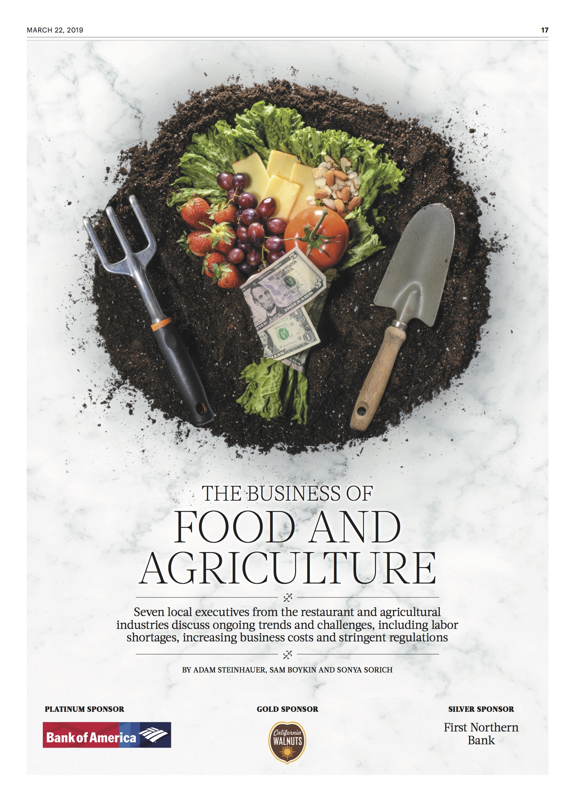
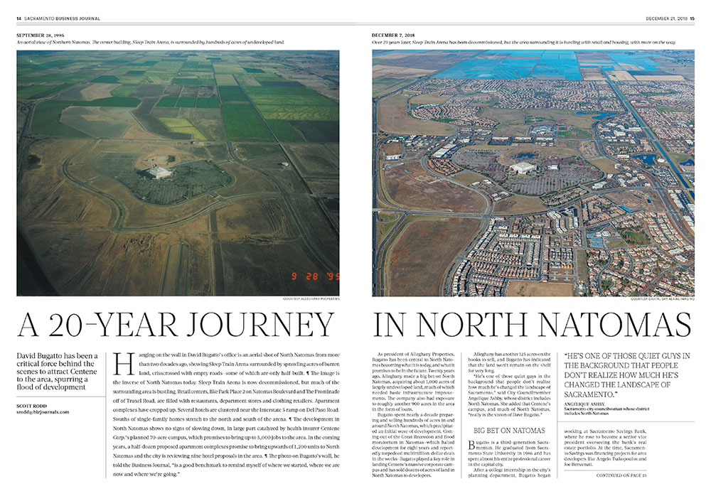
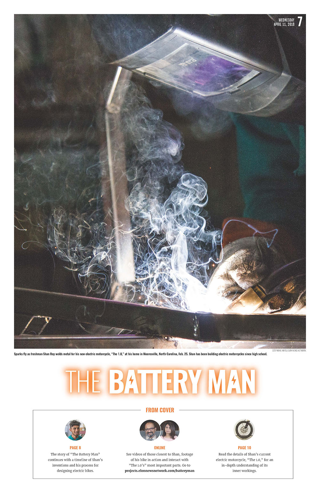
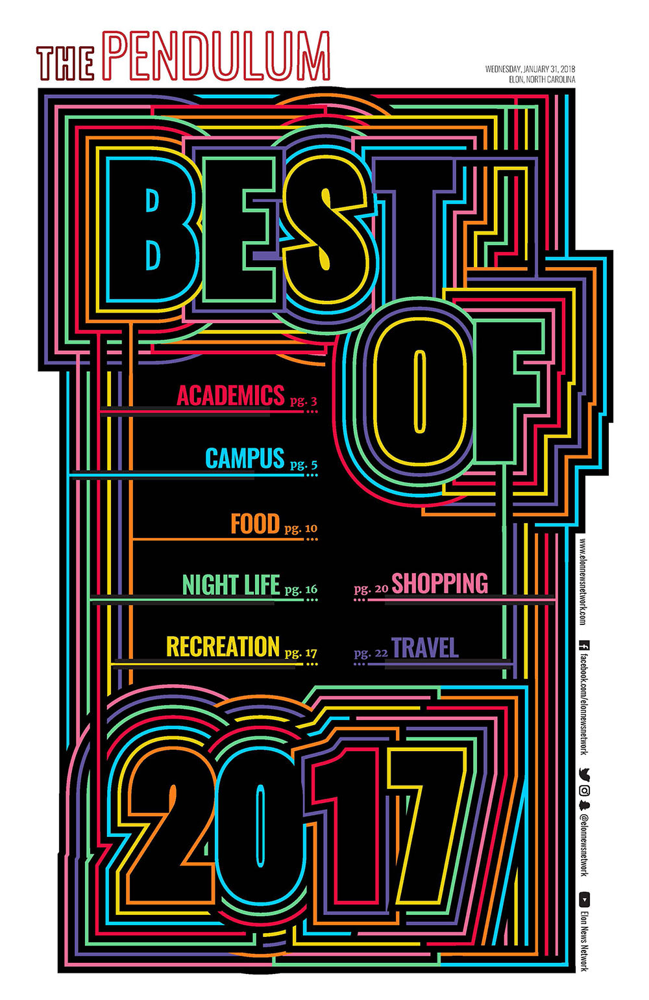

Print layout
Page designs from the Sacramento Business Journal, The Virginian-Pilot and Elon News Network
Sacramento Business Journal
40 under 40 | Page design and photo illustration

The theme for the special section was "channel your inner child." I built the "40/40" out of Legos and worked with our photographer to create the composite image.
See a timelapse of me building the cover here.
Award of Excellence from the Society for News Design for Business Cover.
Sacramento Business Journal
The Business of Food & Agriculture | Page design and photo illustration
The crops on the cover represent some of California's top agricultural commodities.
Elon News Network
Diversifying the decision |
Page design

First place from the Michigan State University Society for News Design for front page design
Second place from the Associated Collegiate Press for front page design
Second place from the North Carolina College Media Association for Single- or Two-page Design
Sacramento Business Journal
A 20-year journey in North Natomas | Page design
This package also included an in-depth infographic about land sales and drone footage to give a better view of the area. View the infographic here and the drone footage here.
Award of Excellence from the Society for News Design for Cover Story/Spread.
The Virginian-Pilot
Piling Up | Page design and illustration

First place from the Michigan State University Society for News Design for Sports Page Design
Sacramento Business Journal
Rejuvenating Sacramento's historic waterfront | Page design and photo illustration

Sacramento Business Journal
Rejuvenating Sacramento's historic waterfront | Page design

Elon News Network
The war on mold | Page design
and illustration

Elon News Network
The Battery Man | Page design and photography
The web component of this won an honorable mention from the Associated Collegiate Press for Multimedia Feature and a second place honor from the North Carolina College Media Association for Digital Storytelling. View it here
Elon News Network
The Battery Man | Page design and photography

The web component of this won an honorable mention from the Associated Collegiate Press for Multimedia Feature and a second place honor from the North Carolina College Media Association for Digital Storytelling. View it here
Elon News Network
Best of 2017 | Page design and illustration
Honorable mention from the Michigan State University Society for News Design for Front Page Design
The Virginian-Pilot
Health care bill | Page design

The Virginian-Pilot
High school sports rewind
2016-2017 | Page design

Elon News Network
Starting to grow | Page design and photo illustration

Second Place from the North Carolina Society for News Design for Single- or Two-page Design.
Elon News Network
Back in the bracket | Page design

Elon News Network
The move-in edition | Page design and photo illustration

Regional Mark of Excellence Award from the Society of Professional Journalists for Photo Illustration.